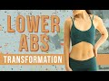
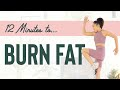
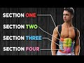
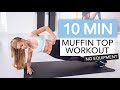
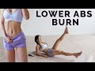
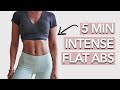
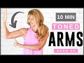
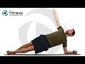

Select a file
Video search
Uploaded

.jpg) | 12 Minutes to Toned Abs Workout You guys, I wasn't lying when I said the 12 Minutes of Toned series would be INTENSE! We're just about to be halfway through and I know you're gonna love this one...
Today's all about the abs & obliques!!! Your moves are criss crosses, double leg lifts, table top crunches, eagle crunches, scissors, rollovers & a plank! Let's do this!!
Here is where I get all of my music! Epidemic Sound: http://share.epidemicsound.com/sgFTn
My yoga mat is from: http://www.popflexactive.com
******
Cassey Ho is an award-winning fitness instructor, entrepreneur and online personality. As the creator behind Blogilates, the #1 female fitness channel on YouTube, she’s transformed millions of lives through helping them achieve their strength and weight-loss goals. She focuses on making fitness fun and the results are evident. Cassey's unique format, POP Pilates©, which launched as a workout video on YouTube in 2009, has become a live fitness class that can be taken at gyms all over the world with over 3,000 POP Pilates classes being taught monthly. Her authenticity continues to shine through, making her one of the most relatable fitness icons online and beyond. She's also the author of the best-selling book, Hot Body Year Round and is the designer of her own activewear line, POPFLEX.
With a wide range of free workout videos available, Cassey's channel focuses on ab exercises, butt & thigh exercises, arm exercises, pilates, cardio routines, fat burning workouts, high intensity interval training workouts (HIIT), stretching and flexibility routines and so much more!
***
DISCLAIMER:
Blogilates and oGorgeous Inc. strongly recommend that you consult with your physician before beginning any exercise program.
You should be in good physical condition and be able to participate in the exercise.
You should understand that when participating in any exercise or exercise program, there is the possibility of physical injury. If you engage in this exercise or exercise program, you agree that you do so at your own risk, are voluntarily participating in these activities, assume all risk of injury to yourself, and agree to release and discharge Blogilates and oGorgeous Inc. from any and all claims or causes of action, known or unknown, arising out of Blogilates' and oGorgeous Inc.'s negligence. 15 min - 2 Feb 2020 |
.jpg) | 12 Minutes to Toned Total Body Workout Are you one of those types of people who only has a few minutes a day to work out and STILL can't choose between arms, butt or legs?! It's ok, me too sometimes. That's why today's 12 Minutes to Toned workout is gonna target the whole body. We're gonna get a lot done in a short amount of time!!!
The moves are narrow squats, back behind leg lifts (right), back behind leg lifts (left), straight leg heel lift (right), straight leg heel lift (left), push up dogs & star abs!
Here is where I get all of my music! Epidemic Sound: http://share.epidemicsound.com/sgFTn
My outfit & yoga mat are from: http://www.popflexactive.com
******
Cassey Ho is an award-winning fitness instructor, entrepreneur and online personality. As the creator behind Blogilates, the #1 female fitness channel on YouTube, she’s transformed millions of lives through helping them achieve their strength and weight-loss goals. She focuses on making fitness fun and the results are evident. Cassey's unique format, POP Pilates©, which launched as a workout video on YouTube in 2009, has become a live fitness class that can be taken at gyms all over the world with over 3,000 POP Pilates classes being taught monthly. Her authenticity continues to shine through, making her one of the most relatable fitness icons online and beyond. She's also the author of the best-selling book, Hot Body Year Round and is the designer of her own activewear line, POPFLEX.
With a wide range of free workout videos available, Cassey's channel focuses on ab exercises, butt & thigh exercises, arm exercises, pilates, cardio routines, fat burning workouts, high intensity interval training workouts (HIIT), stretching and flexibility routines and so much more!
***
DISCLAIMER:
Blogilates and oGorgeous Inc. strongly recommend that you consult with your physician before beginning any exercise program.
You should be in good physical condition and be able to participate in the exercise.
You should understand that when participating in any exercise or exercise program, there is the possibility of physical injury. If you engage in this exercise or exercise program, you agree that you do so at your own risk, are voluntarily participating in these activities, assume all risk of injury to yourself, and agree to release and discharge Blogilates and oGorgeous Inc. from any and all claims or causes of action, known or unknown, arising out of Blogilates' and oGorgeous Inc.'s negligence. 15 min - 9 Feb 2020 |
.jpg) | 12 Minutes to Toned Booty Workout You guys made it to your LAST 12 Minutes to Toned video!!! Have you guys been liking these extreme workouts?! I hope so cause today you guys are gonna experience a GOOD. BOOTY. DEATH. Yup, our last workout is all about the glutes!!!
The moves are kneeling leg lift (right), elbow tap extension (right), laying mermaid lift (right), kneeling leg lift (left), elbow tap extension (left), laying mermaid lift (left) & butterfly bridges!
Here is where I get all of my music! Epidemic Sound: http://share.epidemicsound.com/sgFTn
My yoga mat is from: http://www.popflexactive.com
******
Cassey Ho is an award-winning fitness instructor, entrepreneur and online personality. As the creator behind Blogilates, the #1 female fitness channel on YouTube, she’s transformed millions of lives through helping them achieve their strength and weight-loss goals. She focuses on making fitness fun and the results are evident. Cassey's unique format, POP Pilates©, which launched as a workout video on YouTube in 2009, has become a live fitness class that can be taken at gyms all over the world with over 3,000 POP Pilates classes being taught monthly. Her authenticity continues to shine through, making her one of the most relatable fitness icons online and beyond. She's also the author of the best-selling book, Hot Body Year Round and is the designer of her own activewear line, POPFLEX.
With a wide range of free workout videos available, Cassey's channel focuses on ab exercises, butt & thigh exercises, arm exercises, pilates, cardio routines, fat burning workouts, high intensity interval training workouts (HIIT), stretching and flexibility routines and so much more!
***
DISCLAIMER:
Blogilates and oGorgeous Inc. strongly recommend that you consult with your physician before beginning any exercise program.
You should be in good physical condition and be able to participate in the exercise.
You should understand that when participating in any exercise or exercise program, there is the possibility of physical injury. If you engage in this exercise or exercise program, you agree that you do so at your own risk, are voluntarily participating in these activities, assume all risk of injury to yourself, and agree to release and discharge Blogilates and oGorgeous Inc. from any and all claims or causes of action, known or unknown, arising out of Blogilates' and oGorgeous Inc.'s negligence. 17 min - 23 Feb 2020 |
.jpg) | 12 Minutes to Toned Arms Workout Welcome to the "12 Minutes to Toned" series!! I'll be releasing a brand new workout for you every week for the next 6 weeks focused on a different area of your body! Today, we are focusing on your upper body and arms, specifically your shoulders, triceps, biceps, chest, back, and traps! I hope this workout helps you find the joy in your movement. I know you will be feeling a sore but so strong once you finish!
Your moves for this workout include: prayer pulses, tricep dips, robot arms, half cobra pushups, walnut crushers, up up down downs and milk jugs. Oh and don't forget to leave a comment if you like the new set!! I'm in love!
Here is where I get all of my music! Epidemic Sound: http://share.epidemicsound.com/sgFTn
My yoga mat is from my shop: http://www.popflexactive.com
******
Cassey Ho is an award-winning fitness instructor, entrepreneur and online personality. As the creator behind Blogilates, the #1 female fitness channel on YouTube, she’s transformed millions of lives through helping them achieve their strength and weight-loss goals. She focuses on making fitness fun and the results are evident. Cassey's unique format, POP Pilates©, which launched as a workout video on YouTube in 2009, has become a live fitness class that can be taken at gyms all over the world with over 3,000 POP Pilates classes being taught monthly. Her authenticity continues to shine through, making her one of the most relatable fitness icons online and beyond. She's also the author of the best-selling book, Hot Body Year Round and is the designer of her own activewear line, POPFLEX.
With a wide range of free workout videos available, Cassey's channel focuses on ab exercises, butt & thigh exercises, arm exercises, pilates, cardio routines, fat burning workouts, high intensity interval training workouts (HIIT), stretching and flexibility routines and so much more!
***
DISCLAIMER:
Blogilates and oGorgeous Inc. strongly recommend that you consult with your physician before beginning any exercise program.
You should be in good physical condition and be able to participate in the exercise.
You should understand that when participating in any exercise or exercise program, there is the possibility of physical injury. If you engage in this exercise or exercise program, you agree that you do so at your own risk, are voluntarily participating in these activities, assume all risk of injury to yourself, and agree to release and discharge Blogilates and oGorgeous Inc. from any and all claims or causes of action, known or unknown, arising out of Blogilates' and oGorgeous Inc.'s negligence. 16 min - 20 Jan 2020 |
12 Minute Flat Abs at Home! Burn That Belly Fat with Dani! Beginners Ab Workout, No Equipment ♥ Start your FREE 7 Day Trial: http://www.psychetruth.vhx.tv
♥ 30 Day Ab Challenge FREE with Amazon Prime: https://www.amazon.com/gp/video/detail/B0754J2B6G/
♥ Support Our Work @ http://www.psychetruthpatrons.com
↓ Follow Me! Social Media Links Below ↓
12 Minute Flat Abs at Home! Burn That Belly Fat with Dani! Beginners Ab Workout, No Equipment
Say bye bye to belly fat with this core & abdominal fitness routine. This is Day 3 of Dani's 30 Day Ab Program available on Amazon & WellnessPlus.tv.
♥ Dani's 30 Day Ab Challenge FREE with Amazon Prime: https://www.amazon.com/gp/video/detail/B0754J2B6G/
♥ Follow Dani for more Fitness Motivation!
https://www.instagram.com/daninicolefitness/
https://www.youtube.com/channel/UCqqRVPxcYWAgTq16k2l88ZA
♥ 100s of Courses on Weight Loss, Fitness, Yoga & More, Start your FREE TRIAL Today: http://www.psychetruth.vhx.tv
Follow our Social Media
https://www.instagram.com/psychetruth
http://www.facebook.com/psychetruthvideos
http://www.pinterest.com/psychetruth
http://www.twitter.com/psychetruth
http://www.youtube.com/psychetruth
http://www.psychetruth.net
Related Videos:
Where to Start? 10 Minute Workout for Complete Beginners with Dani, Total Body Fitness At Home
https://youtu.be/oEAeMQhFgE8
Get Fit Quick with Dani! Fat Burning HIIT Cardio Workout, Total Body Beginners Home Fitness
https://www.youtube.com/watch?v=XCkBBnlmaMI
Belly Fat Blast with Dani! 15 Min. Ab Workout for Complete Beginners, Core, Abs, Fitness at Home
https://www.youtube.com/watch?v=jxJkBrL0AfA
Fat Burning Full Body Workout with Dani, HIIT Intense Cardio, 20 Minute Fitness At Home, Beginners
https://www.youtube.com/watch?v=o-n-HCXMUdw
© Copyright 2018 Target Public Media LLC. All Rights Reserved. #Psychetruth #WellnessPlus 13 min - 10 Apr 2018 |
12 Min Home ABS workout | EASY 6 pack Easy way to get your abs ripped. 12minutes 3 times a week, and you will see a crazy 6pack in a short time!
***
Camera - https://amzn.to/2FBEIqE
Lens (crazy bookeh) - https://amzn.to/2KqhYIR
ND filter - https://amzn.to/2S2nDHI
Batteries for camera - https://amzn.to/2KwxJy9
Portable light - https://amzn.to/2SaC0Kd
Batteries for light - https://amzn.to/2OVLGpH
****
You can get up to 20% OFF on Myprotein using my DISCOUNT CODE:
●US
Offer: 20% off (excludes already discounted items)
Code: NATTYUS
http://goo.gl/R9oase
●UK
Offer: 8% off
Code: NATTYUK
http://goo.gl/TMGwOJ
●Magyarország
kedvezmény: 8%
KÓD: NATTYHU
http://goo.gl/m0AVag
●GERMANY
Offer: 8% off
Code: NATTYDE
http://goo.gl/nwLcoL
●FRANCE
Offer: 8% off
Code: NATTYFR
http://goo.gl/9QG4Og
●SPAIN
Offer: 8% off
Code: NATTYES
http://goo.gl/2vUbcW
●POLAND
Offer: 8% off
Code: NATTYPL
http://goo.gl/0qBP1y
***
If you are interested to see more bodybuilding,fitness, and eating related videos, make sure to, COMMENT, THUMBS UP, and SUBSCRIBE to my channel:)
Beingnatty™
➤INSTAGRAM: "beingnatty"
➤FACEBOK: http://www.facebook.com/BeingnattyOfficial
➤GMAIL: beingnattyofficial@gmail.com
➤WHATSAPP: +36309472142
music:
Itro - Panda
Lensko - Titsepoken
K391 - Everybody
Lensko - Let's go
Alan Walker - spectre 15 min - 2 Jun 2015 |
I Tried Blogilates 12 Minutes To Toned Abs Workout For a Week! i Tried 12 minutes to toned abs workout by Blogilates for a week. Does it work?
Here is the workout link https://www.youtube.com/watch?v=BTa6crp6L9g&t=611s
I am a mother of two and currently making busy book part time. To be honest i don’t really like workout, but i have to do it to get back in shape.
I kept complaining about how i hated the way my tummy looked, but complaining would not change anything so here i am working my butt off.
I like experimenting with exercises and finding what is right for me. Losing weight and being healthy for myself not somebody else.
I need workout that is effective and quick. Definitely can’t go to gym and no diet or eating less! I encourage you to find the suitable workout for you. I am an impatient person so i choose fast paced workout.
Keep an open mind that every person is different, if there were no result then you should not be discouraged but moved on to next workout.
Check my other challenges :
#1 30 Days 10,000 Steps Challenge
https://www.youtube.com/watch?v=SDMIZ6YrHCk
#2 How To Lose Flabby Arms in 7 days by Brightside Challenge
https://www.youtube.com/watch?v=XvWxN6PY5f4
#3 Chloe Ting’s 2 weeks Abs Challenge
https://www.youtube.com/watch?v=McdzP0G2_l0
#4 7 day Challenge 7 minute workout to lose belly fat by Lucy Wyndham-Read
https://www.youtube.com/watch?v=YPQP_us_w9A
#5 Jillian Michaels 7 Minute Total Body Workout
https://youtu.be/1Q6zeWd6OcA
#6 Chris Heria 7 Minute Fat Burning To Do Everyday
https://youtu.be/j7hlbfR7zKg
#7 April Han FIt and Fashion Toned & Slim thigh in 7 days
https://youtu.be/0Q2HaUUakBU 3 min - 14 May 2020 |
.jpg) | 12 Minutes to Toned Thighs Workout Today, we're focusing on our thighs, so get ready for some intense inner thigh, outer thigh & quad action!! Your moves are leg swings (right), passé & drag (right), passé up and down (right), leg swings (left), passé & drag (left), passé up and down (left), plié in relevé, sideways scissors & froggers!
Here is where I get all of my music! Epidemic Sound: http://share.epidemicsound.com/sgFTn
My yoga mat is from: http://www.popflexactive.com
******
Cassey Ho is an award-winning fitness instructor, entrepreneur and online personality. As the creator behind Blogilates, the #1 female fitness channel on YouTube, she’s transformed millions of lives through helping them achieve their strength and weight-loss goals. She focuses on making fitness fun and the results are evident. Cassey's unique format, POP Pilates©, which launched as a workout video on YouTube in 2009, has become a live fitness class that can be taken at gyms all over the world with over 4,000 POP Pilates classes being taught monthly. Her authenticity continues to shine through, making her one of the most relatable fitness icons online and beyond. She's also the author of the best-selling book, Hot Body Year Round and is the designer of her own activewear line, POPFLEX.
With a wide range of free workout videos available, Cassey's channel focuses on ab exercises, butt & thigh exercises, arm exercises, pilates, cardio routines, fat burning workouts, high intensity interval training workouts (HIIT), stretching and flexibility routines and so much more!
***
DISCLAIMER:
Blogilates and oGorgeous Inc. strongly recommend that you consult with your physician before beginning any exercise program.
You should be in good physical condition and be able to participate in the exercise.
You should understand that when participating in any exercise or exercise program, there is the possibility of physical injury. If you engage in this exercise or exercise program, you agree that you do so at your own risk, are voluntarily participating in these activities, assume all risk of injury to yourself, and agree to release and discharge Blogilates and oGorgeous Inc. from any and all claims or causes of action, known or unknown, arising out of Blogilates' and oGorgeous Inc.'s negligence. 15 min - 26 Jan 2020 |
 | 10 Minute Lower Ab Flattener | Total Body Transformation Workout Welcome to your Total Body Transformation!!! Over the next 6 weeks, we're gonna target ALL the major muscles in your body in a way that will make you feel stronger every week.
March workout calendar: https://www.blogilates.com/march-2020-workout-calendar/
I'm really excited about this series because this is the time of year when we're just ready to switch up our workout routines!! I'm gonna tell you EXACTLY what to do every day this month, so it'll basically be like I am your personal trainer. The link to the March workout calendar is above!
You have 8 lower ab moves today, and we'll do each for 1 minute with a 15 second break in between. They are:
1. Double Leg Stretch
2. Expanding Tabletops (R)
3. Expanding Tabletops (L)
4. Reverse Crunch
5. Double Leg Lift
6. Double Ds
7. Rollovers
8. Flutters
Workout starts at 3:13!
Here is where I get all of my music! Epidemic Sound: http://share.epidemicsound.com/sgFTn
******
Cassey Ho is an award-winning fitness instructor, entrepreneur and online personality. As the creator behind Blogilates, the #1 female fitness channel on YouTube, she’s transformed millions of lives through helping them achieve their strength and weight-loss goals. She focuses on making fitness fun and the results are evident. Cassey's unique format, POP Pilates©, which launched as a workout video on YouTube in 2009, has become a live fitness class that can be taken at gyms all over the world with over 3,000 POP Pilates classes being taught monthly. Her authenticity continues to shine through, making her one of the most relatable fitness icons online and beyond. She's also the author of the best-selling book, Hot Body Year Round and is the designer of her own activewear line, POPFLEX.
With a wide range of free workout videos available, Cassey's channel focuses on ab exercises, butt & thigh exercises, arm exercises, pilates, cardio routines, fat burning workouts, high intensity interval training workouts (HIIT), stretching and flexibility routines and so much more!
***
DISCLAIMER:
Blogilates and oGorgeous Inc. strongly recommend that you consult with your physician before beginning any exercise program.
You should be in good physical condition and be able to participate in the exercise.
You should understand that when participating in any exercise or exercise program, there is the possibility of physical injury. If you engage in this exercise or exercise program, you agree that you do so at your own risk, are voluntarily participating in these activities, assume all risk of injury to yourself, and agree to release and discharge Blogilates and oGorgeous Inc. from any and all claims or causes of action, known or unknown, arising out of Blogilates' and oGorgeous Inc.'s negligence. 16 min - 1 Mar 2020 |
 | 12 Minutes to Burn Fat - Low Impact Cardio Workout You're not gonna need a yoga mat for today's 12 Minutes to Toned workout, but you WILL need your sneakers cuz we're about to get our heart rates WAYYYY up. The whole cardio workout is apartment friendly, too!!
The moves are squats, alternating tip toe lunges, POP burpee, alternating curtsy lunge, inchworm kick & punch, sweeping side lunge & alternating low back lunge!
Here is where I get all of my music! Epidemic Sound: http://share.epidemicsound.com/sgFTn
My outfit & yoga mat are from: http://www.popflexactive.com
******
Cassey Ho is an award-winning fitness instructor, entrepreneur and online personality. As the creator behind Blogilates, the #1 female fitness channel on YouTube, she’s transformed millions of lives through helping them achieve their strength and weight-loss goals. She focuses on making fitness fun and the results are evident. Cassey's unique format, POP Pilates©, which launched as a workout video on YouTube in 2009, has become a live fitness class that can be taken at gyms all over the world with over 3,000 POP Pilates classes being taught monthly. Her authenticity continues to shine through, making her one of the most relatable fitness icons online and beyond. She's also the author of the best-selling book, Hot Body Year Round and is the designer of her own activewear line, POPFLEX.
With a wide range of free workout videos available, Cassey's channel focuses on ab exercises, butt & thigh exercises, arm exercises, pilates, cardio routines, fat burning workouts, high intensity interval training workouts (HIIT), stretching and flexibility routines and so much more!
***
DISCLAIMER:
Blogilates and oGorgeous Inc. strongly recommend that you consult with your physician before beginning any exercise program.
You should be in good physical condition and be able to participate in the exercise.
You should understand that when participating in any exercise or exercise program, there is the possibility of physical injury. If you engage in this exercise or exercise program, you agree that you do so at your own risk, are voluntarily participating in these activities, assume all risk of injury to yourself, and agree to release and discharge Blogilates and oGorgeous Inc. from any and all claims or causes of action, known or unknown, arising out of Blogilates' and oGorgeous Inc.'s negligence. 15 min - 16 Feb 2020 |
.jpg) | 12 MIN STRONG TONED ARMS & ABS - Home Workout - no equipment Let’s focus on strong, toned arms and abs today - the main focus is on our shoulders, chest, tricep and core muscles. You don’t need equipment for the workout - just some energy, yourself and little bit of space.
We have 12 different exercises:
45 SEC WORK
15 SEC OFF
Here are the exercises:
DOWN DOG TAPS
SHOULDER KNEE TOE TAPS
PLANK HOLD
PLANK WALKS
COBRA PUSH UPS
SIDE PLANK LEG RAISES RIGHT
SIDE PLANK LEG RAISES LEFT
SIDE PLANK CRUNCHES RIGHT
SIDE PLANK CRUNCHES LEFT
DIAMOND PUSH UPS
TRICEP DIPS
DIP AND TUCK UP
Beginners: Do the workout 1x
Advanced: Do the workout 2x
👚 My Outfit : https://gym.sh/Shop-Anna-E
🥛 Post Workout Shake: https://www.foodspring.de/whey-protein (USE ANNAFSG for 15% OFF)
📷 GEAR I USE:
Camera: https://amzn.to/3aticKD
Lens: https://amzn.to/3cCiujR
Tripod: https://amzn.to/2zontX9
Microphone: https://amzn.to/34VaKXH
💪🏼 MY HOME TRAINING GUIDE: http://growingannanas.com
» Subscribe to my Channel for weekly workouts: http://bit.ly/2QLvpXn
» Instagram: http://bit.ly/2ZSdHFR
» Facebook: http://bit.ly/2SVkgpE
✉ Contact (business inquiries): growingannanas@gmail.com 13 min - 10 Aug 2020 |
.jpg) | 12 MINUTES SIXPACK ABS WORKOUT | no equipment | Caro Daur #DAURPOWER Ready to sweat? This is an intense workout to target your abs. You don't need any equipment or weights! :)
1. PLANK JUMPS
2. RUSSIAN TWIST
3. CRUNCH FRONT KICK
4. ALTERNATE LEG LIFT
5. CRUNCH
6. REVERSE LEG CRUNCH
7. BOAT RIGHT / LEFT
8. BOAT HOLD
9. BICYCLE CRUNCH
10. SIDE PLANK LIFT RIGHT
11. PLANK
12. SIDE PLANK LIFT LEFT
2nd round
Shop my workout clothes:
Bra: https://bit.ly/2XKXmUz
Pants: https://bit.ly/2V74qZJ
Shoes: https://bit.ly/2ygzWvb
I hope you liked that workout! I would be super happy to hear your feedback! What did you like? Any preferences for my next videos?
TAGG me (@carodaur) + use the hashtag #DAURPOWER if you do the workout! :) Happy to see you working out! Lets do this together!
INSTAGRAM: https://www.instagram.com/carodaur/
LOCATION: Kaifu Lodge
PRODUCTION: https://www.instagram.com/mala_yogamat/ 13 min - 26 Mar 2020 |
 | 10 MIN PERFECT ABS WORKOUT (NO EQUIPMENT BODYWEIGHT WORKOUT!) To develop a truly impressive Sixpack, you will want to train from abs a whole range of perspectives. You see, the core is generally made up of four key components. Namely - the rectus abdominus (6pack / lower abs), obliques, the serratus anterior, and the transverse abdominus (inner abs).
The obliques are an absolute must when it comes to developing an aesthetic physique. If your goal is to attain the V tapered look, there’s no way around training them. The obliques are a multifunctional muscle, they act to pull the chest downwards and compress the abdominal cavity, as well as performing side bending and opposing side rotation. Overall, you can’t skimp on your obliques for aesthetic and performance, and the best way to ensure that you stay on track is to keep your workouts fresh & challenging
The serratus is a muscle that originates on your upper rib cage and attaches to the media border of the shoulder blade (basically the shark gill looking things). The serratus muscles play a pivotal role in framing out your abs, obliques and lower pec. Not too mention, it absolutely serves as an asset to the v taper, in turn giving you a better looking set of abs!
This video is full length which means you can just follow along with whatever I'm doing. If you need extra rest, just pause the video. If you don't need a rest - watch it the whole way through.
You can hit this home workout 2-3x per week - and if you wanted to keep active on your other days - be sure to check out my other workouts!
👉Coaching Programs: https://www.fraserwilsonfitness.com
👉Subscribe: (https://goo.gl/84uFTA)
💪Supplement Code: FRASER10 at https://www.ehplabs.com/
👉Shop Gymshark: https://gym.sh/Shop-Fraser2
ADD ME ON:
Instagram: https://www.instagram.com/FraserWilsonFit/
Facebook: https://facebook.com/FraserWilsonFit/
Snapchat: FraserWilsonFit
Music:
Ship Wrek & Zookeepers - Ark [NCS Release]:
https://youtu.be/8xlDwukxjnA
Heuse & Zeus x Crona - Pill (feat. Emma Sameth) [NCS Release]:
https://youtu.be/CLiXUT3MS34
Cartoon - On & On (feat. Daniel Levi) [NCS Release]:
https://youtu.be/K4DyBUG242c
3rd Prototype - Renegade (feat. Harley Bird & Valentina Franco) [NCS Release]:
https://youtu.be/7mghPZOCvKk 10 min - 20 Dec 2019 |
12 Minute Standing Abs with Dumbbell Workout CHECK OUT MY FULL PROGRAMS HERE: http://bit.ly/2En0HvR
GET MY NUTRITION GUIDE HERE: https://bit.ly/360sOPl
FOLLOW ME ON FB, IG, AND TWITTER @BodyfitbyAmy
FIND MY FAVORITE DUMBBELLS AND OTHER EQUIPMENT HERE: https://www.amazon.com/shop/bodyfitbyamy
This 12 minute workout uses a dumbbell to do standing ab exercises, all while getting your heart rate up for bonus cardio. Tighten and tone your tummy with this no crunch, no plank workout. Great for those who have back pain or problems doing ab workouts on the mat. Options for all levels! 13 min - 27 Jun 2015 |
Abs Workout 🔥Get that 11 Line Abs in 35 days Want that 11 line abs? It's the 2019 Summer Shred Challenge! Time to burn that belly fat away, lose weight in time to get that summer body! This intense abs workout is 10 mins long, contains 12 abs exercises that will help you tone your abs towards that 11 line abs and flat tummy.
Enjoy the workouts, and please do hit that like button, subscribe and leave a comment below.
35 Days Summer Shredding Program:
https://www.chloeting.com/program/
☆ Summer Shred Challenge Videos ☆
Episode 1 - Full Body Burn - https://youtu.be/Lscqihirc3c
Episode 2 - 11 Abs - https://youtu.be/6TmQiugy_qw
Episode 3 - HIIT Workout - https://youtu.be/mvlfZ43ehmE
Episode 4 - Arms & Back - https://youtu.be/d8STqg1VvN0
Episode 5 - Booty & Toned Legs - https://youtu.be/mTgc6gpCEng
Weight Loss Meal Ideas - https://youtu.be/q65enzklzqo
☆Help Subtitle this video☆
http://www.youtube.com/timedtext_video?ref=share&v=6TmQiugy_qw
☆Sponsor this channel☆
https://www.youtube.com/chloeting/join
☆Sub to my 2nd channel☆
https://www.youtube.com/channel/UCBrcDabYtwbR1VIhwH5efZA?sub_confirmation=1
☆My Instagram links☆
https://www.instagram.com/chloe_t/
https://www.instagram.com/itschloeting/
☆Filmed With☆
Panasonic GH5
Lumix G 8-18mm
Lumix G 12-35mm
Lumix G 42.5mm
https://www.amazon.com/shop/chloeting
☆Music by☆
MBB - Wake Up
SoundCloud: https://soundcloud.com/mbbofficial
https://bit.ly/DownloadWakeUp
Music provided by Monstercat:
Conro - Remember You
https://youtube.com/monstercat
https://youtube.com/monstercatinstinct
Vicetone - I Hear You
https://youtube.com/monstercat
https://youtube.com/monstercatinstinct
Marshmello - Alone (MRVLZ Remix)
https://youtube.com/monstercat
https://youtube.com/monstercatinstinct
Bishu - Way Up
https://youtube.com/monstercat
https://youtube.com/monstercatinstinct
#abs #absworkout #chloetingchallenge
IMPORTANT DISCLAIMER: Please note that all of my videos are titled according to SEO best practices for content discoverability. Unfortunately this may mean that video titles are subjective and shouldn't be seen as absolute truth. As an example, targeting fat reduction is not scientifically proven but a video title might suggest otherwise. When following any of my videos, please take precaution to exercise in a safe environment, and I highly suggest seeing a health and fitness professional to give you advice on your exercise form and dietary needs. Every person is unique and there is no one size fits all solution to health or fitness. I am not a medical professional and your health and safety is the utmost importance. 11 min - 30 Apr 2019 |
6 PACK ABS For Beginners You Can Do Anywhere 6 PACK ABS workouts you can do anywhere if you are a beginner. Try these workouts when starting to build ABS!
Get the Music in the video made by Chris Heria:
https://soundcloud.com/chrisheria
FOLLOW CHRIS HERIA
IG: @chrisheria https://www.instagram.com/chrisheria/
VLOG YT CHANNEL: https://youtube.com/CHRISHERIA
Take your training to the next level with a Heria weight vest:
https://chrisheria.com
Follow THENX on Instagram:
@thenx https://www.instagram.com/thenx/
Join our Events: http://thenx.com/blog/events/
Heria Apparel here: https://chrisheria.com/
BECOME A THENX MEMBER: https://thenx.com/
DOWNLOAD THENX Iphone App: https://goo.gl/Qk235s
DOWNLOAD ANDROID App: https://goo.gl/kcRBpL
SHOP THENX: https://thenx.com/shop
VIEW OUR EVENT CALENDAR: http://thenx.com/blog/events/
THENX BLOG: http://thenx.com/blog/
The BEST Calisthenics App, secret techniques, programs, and step by step guided tutorials tested by thousands of people to reach their goals, with the most simplistic systematic approach to learning any calisthenics move such as the Handstand, Muscle Up, Planche, with ease.
And it's all IN HERE
https://WWW.THENX.COM 12 min - 2 Jul 2018 |
10 Mins ABS Workout To Get FLAT BELLY IN 30 DAYS | FREE WORKOUT PROGRAM This is a 10 mins intense abs workout that will help you get that flat belly and toned abs. This video is part of my 30 day FREE flat belly challenge program. If you want to get that flat abs and six pack, try out this video as well as the other abs videos in this series and get those abs you want in 30 days.
FREE 30 day FLAT BELLY CHALLENGE PROGRAM: https://www.chloeting.com/program
Ep 1 - 30 Min Full Body Workout: https://youtu.be/NQmnJtB1gzo
Ep 2 - 10 Mins Abs Workout: https://youtu.be/UBnfm4s7CRA
Ep 3 - 20 Mins Abs Hiit Cardio: https://youtu.be/owrBD7_8edA
Ep 4 - 10 Mins Lower Abs: https://youtu.be/Th97oQ4eF9U
Ep 5 - 45 Mins Full Body Burn: https://youtu.be/LDvAuqTZxMw
Community RESULTS Video: https://youtu.be/VedbZeysJrk
Meal Prep Video: https://youtu.be/CB0bqOCb1RE
SPONSOR THIS CHANNEL: https://www.youtube.com/chloeting/join
SUB TO MY 2ND CHANNEL: https://www.youtube.com/channel/UCBrcDabYtwbR1VIhwH5efZA?sub_confirmation=1
☆Fitness Outfits☆
My Gymshark Affiliate Link - https://gym.sh/Shop-Chloe-Ting
☆My Instagram links☆
https://www.instagram.com/chloe_t/
https://www.instagram.com/itschloeting/
☆Filmed With☆
Panasonic GH5
Lumix G 8-18mm
Lumix G 12-35mm
Lumix G 42.5mm
https://www.amazon.com/shop/chloeting
☆Music by☆
Track: RetroVision - Hope [NCS Release]
Music provided by NoCopyrightSounds.
Watch: https://youtu.be/4ukOvwQmJvE
Free Download / Stream: http://ncs.io/RVHopeYO
Track: ÉWN - The Light [NCS Release]
Music provided by NoCopyrightSounds.
Watch: https://youtu.be/q2D4-fuv67U
Free Download / Stream: http://ncs.io/EWNTheLightYO
Track: TULE - Lost [NCS Release]
Music provided by NoCopyrightSounds.
Watch: https://youtu.be/h-nHdqC3pPs
Free Download / Stream: http://ncs.io/LostYO
Track: Andromedik - With Me [NCS Release]
Music provided by NoCopyrightSounds.
Watch: https://youtu.be/pyj9yJO4rbA
Free Download / Stream: http://ncs.io/WithMeYO
#abs #absworkout #chloetingchallenge 11 min - 3 Jan 2019 |
Get Abs in 2 WEEKS | Abs Workout Challenge Abs Abs Abs! Everyone seems to be asking for a QUICK and short schedule, so I put together a 2 weeks schedule to help you get closer to those defined abs and to lose weight. A 2 weeks program is easier to commit to, and you can always do it again after you finish it!
Enjoy the abs workout guys!
Find schedule here: chloeting.com/program
☆2 Weeks Shred Challenge☆
EP#1 - 13 Mins HIIT Workout - https://youtu.be/2MoGxae-zyo
EP#2 - Abs in 2 weeks - THIS VIDEO
EP#3 - Arms & Core - https://youtu.be/3Pr6n-nKfMA
EP#4 - Lower Body - https://youtu.be/I9nG-G4B5Bs
☆Help Subtitle this video☆
http://www.youtube.com/timedtext_video?ref=share&v=https://youtu.be/2pLT-olgUJs
☆Sponsor this channel☆
https://www.youtube.com/chloeting/join
☆Sub to my 2nd channel☆
https://www.youtube.com/channel/UCBrcDabYtwbR1VIhwH5efZA?sub_confirmation=1
☆My Instagram links☆
https://www.instagram.com/chloe_t/
https://www.instagram.com/itschloeting/
☆Music by☆
Track: Ascence - Places Like That [NCS Release]
Music provided by NoCopyrightSounds.
Watch: https://youtu.be/jmpRflEHdqs
Free Download / Stream: http://ncs.io/PlacesLikeThat
Track: Dominic Strike - Heartbeat
Music Provided by Magic Records
Listen To The Original: https://youtu.be/Mc_f1j5u0y4
Free Download: https://fanlink.to/o9ha
Dylan Locke - Johnny Johnny Instrumental
Party in Backyard - Bitch Lasagna Instrumental
#abs #absworkout #chloeting
IMPORTANT DISCLAIMER: Please note that all of my videos are titled according to SEO best practices for content discoverability. Unfortunately this may mean that video titles are subjective and shouldn't be seen as absolute truth. As an example, targeting fat reduction is not scientifically proven but a video title might suggest otherwise. When following any of my videos, please take precaution to exercise in a safe environment, and I highly suggest seeing a health and fitness professional to give you advice on your exercise form and dietary needs. Every person is unique and there is no one size fits all solution to health or fitness. I am not a medical professional and your health and safety is the utmost importance. 11 min - 12 Aug 2019 |
12 Min Extreme Abs Workout w/ Zachary Fiorido’s Beauty and the Fit - Extreme Ab Workouts at Home Subscribe to Zachary: http://goo.gl/rUPk8n
Click here to get Zach's Free 28 Day Workout Calendar www.freeworkoutcalendar.com
Download the FREE HASfit app:
Android http://bit.ly/HASfitAndroid -- iPhone http://bit.ly/HASfitiOS
Visit http://hasfit.com for free workouts
Donate with Patreon: https://www.patreon.com/hasfit
Shop HASfit Tribe store: https://hasfit.myshopify.com/
Get up to 2x Faster Results by following a Fitness Program Calendar:
Which program is right for me? http://bit.ly/2E16cng
Foundation Beginner Program: http://bit.ly/2AnjffQ
30 Day Muscle Building: http://bit.ly/2RqYBoO
30 Day Torch (weight loss): http://bit.ly/2VjavR5
Motive Home Athlete’s Plan (intermediate): http://bit.ly/2s09waU
Warrior 90 2.0 (advanced): http://bit.ly/2QX3IxQ
More programs to choose from here: http://bit.ly/2E16cng
Get our Diet Guide:
Eating For Life https://goo.gl/7qnHn4
Personal Training Services: http://hasfitpersonaltrainer.com
Follow us for more!
Facebook: https://www.facebook.com/HASFitness/
Instagram: https://www.instagram.com/hasfit_official/
Snapchat: @hasfit
Twitter: https://twitter.com/HeartSoulFit
Disclaimer:
You should consult your physician or other health care professional before starting a HASfit program or any other fitness program to determine if it is right for your needs. This is particularly true if you (or your family) have a history of high blood pressure or heart disease, or if you have ever experienced chest pain when exercising or have experienced chest pain in the past month when not engaged in physical activity, smoke, have high cholesterol, are obese, or have a bone or joint problem that could be made worse by a change in physical activity. Do not start this fitness program if your physician or health care provider advises against it. If you experience faintness, dizziness, pain or shortness of breath at any time while exercising you should stop immediately.
HASfit offers health, fitness and nutritional information and is designed for educational purposes only. You should not rely on this information as a substitute for, nor does it replace, professional medical advice, diagnosis, or treatment. If you have any concerns or questions about your health, you should always consult with a physician or other health-care professional. Do not disregard, avoid or delay obtaining medical or health related advice from your health-care professional because of something you may have read on this site. The use of any information provided on this site is solely at your own risk.
HASfit makes no warrants, promises, or claims regarding accuracy of the calories burned estimate. It is provided only as a general reference and each person should use an indirect calorimetry system for a more accurate estimate.
Developments in medical research may impact the health, fitness and nutritional advice that appears here. No assurance can be given that the advice contained on HASfit will always include the most recent findings or developments with respect to the particular material.
extreme ab workouts,extreme abs workout,extreme ab workout extreme abs,extreme ab exercises,abdominal workout,abs workout for men,abdominal exercises,abs workout for women,abs workout at home,ab workout for women hiit abs,workout abs,ab workout with weights,intense ab workout,ab exercises,ab workout,abs workout,ab workout at home,ab exercises for women,ab workout for men,workouts for abs,workout to get abs,extreme abdominal exercises,extreme abdominal workouts,extreme abs exercises extreme ab exercise,extreme ab,extreme abdominal workout,extreme abs workouts,extreme abs exercise,extreme abdominal 13 min - 12 Nov 2016 |
Intense LOWER ABS Workout | CAN YOU DO THIS?! Home Workout Routine To Get Rid Of Muffin Top Ready for Summer? Get rid of muffin top and belly fat and let's build abs! This is a intense workout routine, so good and effective to get that flat stomach. Are you ready to take this challenge onboard? Let's smash it out!
Intense LOWER ABS Workout | CAN YOU DO THIS? Home Workout Routine To Get Rid Of Muffin Top
WEIGHT LOSS PROGRAMS AVAILABLE NOW!!!!!!!!!
https://www.getfitbyivana.com/exercise-programs-1
Program designed by me and exercise physiologist to achieve the best results!
SUBSCRIBE to my BOYFRIEND'S Exercise Channel: https://www.youtube.com/channel/UCEi3dwQ02BpOPwvd1ONHB-w
Instagram: getfitbyivana_
https://www.instagram.com/getfitbyivana_/?hl=en
Twitter: getfitbyivana
https://twitter.com/getfitbyivana
Business Enquires:
getfitbyivana@gmail.com
Shop Cute Activewear:
TLF APPAREL:
https://tlfapparel.com
25% Discount Code: TLF-IVANA-25
BUFFBUNNY COLLECTION:
https://www.buffbunny.com
Support Code: GETFITBYIVANA
Music by:
1)
Track: ROY KNOX - Breathe Me In [NCS Release]
Music provided by NoCopyrightSounds.
Watch: https://youtu.be/1xtx6OcvoS8
Free Download / Stream: http://ncs.io/BreatheMeIn
2)
Track: 3rd Prototype - Renegade (feat. Harley Bird & Valentina Franco) [NCS Release]
Music provided by NoCopyrightSounds.
Watch: https://youtu.be/7mghPZOCvKk
Free Download / Stream: http://ncs.io/Renegade
3)
Track: Koven x ROY KNOX - About Me [NCS Official Video]
Music provided by NoCopyrightSounds.
Watch: https://youtu.be/PJtoeOKT9LQ
Free Download / Stream: http://ncs.io/AboutMe
4)
Track: Beatcore & Ashley Apollodor - Burning Bridges [NCS Release]
Music provided by NoCopyrightSounds.
Watch: https://youtu.be/nbaolUFEWBM
Free Download / Stream: http://ncs.io/BurningBridges 13 min - 19 Apr 2020 |
.jpg) | 5 Minute Flat Abs! 5 min. 5 moves. 1 min each. Let's get your flat abs! This is a super short but intense abdominal workout. Comment below with your favorite move!
Get my first ever book: http://www.hotbodybook.com Really appreciate your support!!
♥ I HAVE A NEW DVD: http://www.poppilatesdvd.com
♥ INSPIRATIONAL SHIRTS: http://www.blogilatesdesigns.com
♥ SUBSCRIBE: http://bit.ly/blogilatesyt
♥ BLOG: http://www.blogilates.com
♥ FB: http://www.facebook.com/blogilates
♥ TWEET: http://www.twitter.com/blogilates
♥ TUMBLR: http://www.blogilates.tumblr.com
♥ PINTEREST: http://pinterest.com/blogilates
♥ INSTAGRAM: http://www.instagram.com/blogilates
******
Cassey Ho is a certified Pilates and fitness instructor, named Greatist's Top 25 Health & Fitness Influencers in the World alongside Michelle Obama. She is the winner of the "Social Fitness" Shorty Award and FITNESS Magazine named her their "Best Healthy Living Blogger". She's been featured on Dr. Oz, EXTRA TV, The Steve Harvey Show, COSMPOLITAN Magazine, SHAPE Magazine, Ladies Home Journal, SELF Magazine, NY Times, LA Times, and many more.
***
DISCLAIMER:
Blogilates and oGorgeous Inc. strongly recommend that you consult with your physician before beginning any exercise program.
You should be in good physical condition and be able to participate in the exercise.
You should understand that when participating in any exercise or exercise program, there is the possibility of physical injury. If you engage in this exercise or exercise program, you agree that you do so at your own risk, are voluntarily participating in these activities, assume all risk of injury to yourself, and agree to release and discharge Blogilates and oGorgeous Inc. from any and all claims or causes of action, known or unknown, arising out of Blogilates' and oGorgeous Inc.'s negligence. 7 min - 9 Mar 2015 |
10 min LOWER ABS Workout | LOSE LOWER BELLY FAT A 10 min intense lower abs AT HOME NO EQUIPMENT workout to target your lower belly. How to lose lower belly fat!
⭐️ GRAB MY COOKBOOK! 100+ RECIPES: https://goo.gl/yYNtBL ⭐️
SUBSCRIBE TO MY MAIN CHANNEL (what i eat, recipes, vlogs): https://goo.gl/WTpDQk
OTHER VIDEOS:
➤ PREVIOUS VIDEO (Resistance Band Booty Workout): https://goo.gl/Q9a29C
➤ AT HOME WORKOUTS: https://goo.gl/Q9a29C
➤ GYM WORKOUTS: https://goo.gl/Hi6R5Q
📷 GEAR I USE:
CAMERA: https://goo.gl/rVQzXd
42.5mm LENS: https://goo.gl/oLRc2u
TRIPOD: https://goo.gl/ihp5br
MICROPHONE: https://goo.gl/fPzkRN
GOPRO: https://goo.gl/D6eMwL
✘ I N S T A G R A M: @madfit.ig
✘ T W I T T E R: @maddielymburner
✘ F A C E B O O K: facebook.com/madfit.ig
✉ C O N T A C T (business inquiries): madfit95@gmail.com 14 min - 4 Dec 2018 |
12 Minute Standing Abs Workout With Weights At Home Tone and tighten your stomach in no time with this awesome standing abs workout. Complete core strengthening in only 12 minutes and you never have to get on the floor. Beginner as well as advanced ab exercises demonstrated - grab your dumbbell and let's get to work.
**********************************
FREE 7-Day Workout and menu plan straight to your inbox: https://toneandtighten.activehosted.com/f/3
**********************************
12-Minute Standing Abs Workout
1. Standing dumbbell crunch
2. Rotating dumbbell crunch
3. Rotating curtsy lunge
4. Standing oblique side bend
5. Plie squat and twist
6. Curtsy overhead bends
7. Wood chops
8. Plie side bend crunch
Looking for a great way to intensify your ab workouts and take your core to the next level? There are two sure-fire ways to do it...
Try some new exercises and add weight!
All-too-often we think "ab workouts" need to entail a million sit ups and crunches to yield toned and fit results. Not true!
I encourage clients and patients all the time to get up off the floor and try something new. It's actually a more functional way to train your core, can be easier on your back and neck, and yield amazing results.
Today I'm sharing with you eight of my favorite standing abs exercises compiled in one awesome core workout you can do right from home.
All you need for this workout is one dumbbell (or any type of resistance - even a big water bottle would do!) and you will be feeling this in no time!
No weights at home or weights too difficult? No problem - just do it without the weight. I've got beginner as well as advanced versions of each exercise demonstrated in the video below.
Bonus: NO CRUNCHES REQUIRED! You will be standing the entire workout!
THE WORKOUT
For this workout, we'll perform 8 exercises in 50/10 intervals. That means you'll do 50 seconds of work followed by 10 seconds of an active rest/recovery. These exercises are ordered in such a way that we're going to work all of our core muscles through all their planes of motion, and we're going to do it non-stop.
So grab your timer, and let's get to work!
12-MINUTE STANDING ABS WORKOUT
1. Standing dumbbell crunch - 50 seconds on, 10 seconds off
- Stand holding your dumbbell in both hands over your head.
- March your left knee up to hip level while crunching your elbows down towards your knee.
- Return to the starting position and then repeat with the right knee
2. Rotating dumbbell crunch - 50 seconds on, 10 seconds off
- Stand holding your dumbbell in both hands over your head
- March your left knee up to hip level and angled towards your right shoulder.
- Crunch your elbows down at an angle so your right elbow goes to your left knee.
- Return to the starting position and then repeat with the right knee
3. Rotating curtsy lunge - 50 seconds on, 10 seconds off (1 minute right, 1 minute left)
- Hold the weight out straight in front of you.
- Perform a curtsy lunge by dropping your right foot back behind you and to the outside of your left foot.
- Rotate your torso/the dumbbell as far as you can to the left.
- Return to the upright starting position.
4. Standing oblique side bend - 50 seconds on, 10 seconds off (1 minute right, 1 minute left)
- Hold the weight in your right hand, place your left hand behind your head, and bend as far as you can to the right.
- Perform an oblique crunch by raising your right shoulder as high as you can to the ceiling and bend over to the left.
- BONUS - bring your left knee up towards your left elbow while performing the crunch.
5. Plie squat and twist - 50 seconds on, 10 seconds off
- Start down in a plie squat with your weight straight out in front of you.
- Come up out of your plie squat and rotate to your left.
- Return back down into the plie squat and repeat to the right.
6. Curtsy overhead bends - 50 seconds on, 10 seconds off (1 minute right, 1 minute left)
- Stand upright with the weight over your head.
- Drop into a curtsy lunge on your left leg by dropping your right leg back behind you with your right foot outside of your left.
- As you perform the curtsy lunge side bend to the left to elongate your right obliques as much as possible.
7. Wood chops - 50 seconds on, 10 seconds off (1 minute right, 1 minute left)
- Start with the dumbbell at your left knee.
- With both hands raise the dumbbell up and over your head to the right.
- Slowly return to the starting position.
8. Plie side bend crunch - 50 seconds on, 10 seconds off
- Drop into a plie squat position with a dumbbell raised over your head.
- Hold your plie as you sidebend as much as possible to the left. Use the muscles on your right side to pull yourself back to upright.
- Repeat by dropping as far as possible to the right.
THERE YOU GO! I hope you enjoyed this easy, 12-minute abs workout with weights!
Instagram: http://instagram.com/tone_and_tighten
Pinterest: http://www.pinterest.com/ToneandTighten/
Facebook: https://www.facebook.com/toneandtightenfitness 16 min - 5 Oct 2018 |
.jpg) | Extreme Abs Workout | 25 Min At Home Upper Abs, Lower Abs, Obliques & Total Core Pilates Routine You guys!! I can't believe we hit 5 million!!! 10 years ago, I was uploading YouTube videos to just 40 of my students. NOW THERE'S 5 MILLION OF YOU?! From the bottom of my heart, thank you all for continuing to work out with me. Hope we can keep having fun together!
To celebrate, I put together the HARDEST, most insane ab workout EVER! It's a 5x5 workout, which means we're gonna do 5 rounds with 5 different moves in each round, each focusing on different abdominal muscles. That’s 25 different ab exercises in 25 minutes!
Round 1: UPPER ABS
1. HUNDREDS
2. TABLETOP CRUNCH
3. TOE TOUCHES
4. CRESCENT CRUNCH
5. BUTTERFLY CRUNCH
Round 2: LOWER ABS
1. DOUBLE LEG LIFTS
2. SINGLE LEG DROP
3. REVERSE CRUNCHES
4. FLUTTERS
5. DOUBLE D’S
Round 3: CENTER ABS
1. SINGLE STRAIGHT LEG STRETCH
2. DOUBLE LEG STRETCH
3. STAR ABS
4. EAGLE CRUNCH
5. SINGLE LEGGED JACKKNIFE
Round 4: OBLIQUES
1. CANDLESTICK DIPPER R
2. SIDE PLANK DIPPERS R
3. CANDLESTICK DIPPERS L
4. SIDE PLANK DIPPERS L
5. HIP TWIST BUTT UPS
Round 5: TOTAL CORE
1. ROLLOVERS
2. ROLL UP
3. SPRINTER
4. EARTHQUAKE
5. PLANK
Love you guys!!
P.S. I'm wearing my brand new POPFLEX set from the Terrain Collection!! Get yours at https://www.popflexactive.com/!
#abworkout #pilates #poppilates #blogilates #noequipmentworkout
Music is always from: http://share.epidemicsound.com/sgFTn
******
Cassey Ho is an award-winning fitness instructor, entrepreneur and online personality. As the creator behind Blogilates, the #1 female fitness channel on YouTube, she’s transformed millions of lives through helping them achieve their strength and weight-loss goals. She focuses on making fitness fun and the results are evident. Cassey's unique format, POP Pilates©, which launched as a workout video on YouTube in 2009, has become a live fitness class that can be taken at gyms all over the world with over 3,000 POP Pilates classes being taught monthly. Her authenticity continues to shine through, making her one of the most relatable fitness icons online and beyond. She's also the author of the best-selling book, Hot Body Year Round and is the designer of her own activewear line, POPFLEX.
With a wide range of free workout videos available, Cassey's channel focuses on ab exercises, butt & thigh exercises, arm exercises, pilates, cardio routines, fat burning workouts, high intensity interval training workouts (HIIT), stretching and flexibility routines and so much more!
***
DISCLAIMER:
Blogilates and oGorgeous Inc. strongly recommend that you consult with your physician before beginning any exercise program.
You should be in good physical condition and be able to participate in the exercise.
You should understand that when participating in any exercise or exercise program, there is the possibility of physical injury. If you engage in this exercise or exercise program, you agree that you do so at your own risk, are voluntarily participating in these activities, assume all risk of injury to yourself, and agree to release and discharge Blogilates and oGorgeous Inc. from any and all claims or causes of action, known or unknown, arising out of Blogilates' and oGorgeous Inc.'s negligence. 26 min - 23 Apr 2020 |
Abs Workout for Women at Home Without Equipment This routine will focus on toning your entire abs!
It's one of my favourite abs workout for women at home and its the perfect routine to do as it requires no equipment.
Follow along and keep your core engaged and contracted.
----------
♡ DO THE QUIZ TO FIND OUT EXACTLY WHAT DIET & TRAINING WILL WORK FOR YOU:
https://bit.ly/2YNyoTY
------------
MY SOCIALS:
♡ Instagram: https://www.instagram.com/hollydolke (@hollydolke)
♡ TikTok: @hollydolke 7 min - 12 Nov 2019 |
10 Minute Standing ABS WORKOUT // No Equipment FREE 12 Week Workout Plan: https://www.heatherrobertson.com
No sitting or laying down in this killer Standing Abs Workout. We will target that core and set those obliques on fire with a series of standing ab exercises. Focus on using your breath and exhale as you draw your belly button in each time you lift your knee/leg. No equipment needed in this bodyweight ab workout so just follow along!
Visit: https://www.heatherrobertson.com
Where I get my Music *Try it FREE for 30 days*
http://share.epidemicsound.com/zj9WV
My Go-To Supplements, Beauty Products + More: https://www.amazon.com/shop/heatherrobertson
L I N K S
Website: http://www.heatherrobertson.com
Instagram: http://www.instagram.com/heatherrobertsoncom
Twitter: http://www.twitter.com/followheatherr
Facebook: http://www.facebook.com/heatherrobertsoncom
______________________________
D I S C L A I M E R
This is my own personal workout and may not be suited for you. It is strongly recommend that you consult with your physician before beginning any exercise program. By engaging in this exercise or exercise program, you agree that you do so at your own risk.
______________________________
Thanks for watching!
❤ Heather 11 min - 10 Sep 2019 |
 | 10 MIN AB WORKOUT - Side Abs & Obliques // No Equipment | Pamela Reif Struggling with the SIDES of your stomach? // Werbung
I'm talking about that tiny bit of wobble that creates a fat roll if you put on a pair of skinny jeans. This workout trains your entire abs - but with focus on OBLIQUES! If you want to make this part stronger - take 10 minutes and give this workout a GO! ♥︎ no talking, just TRAIN :)
No Equipment or weights needed!
The video is in full length which means you can just follow whatever I’m doing 30s for each exercise – NO REST IN BETWEEN.
I recommend switching up your workouts to give your muscles enough time to recover. You can do this workout 2-3x a week and if you want to do be active on the other days: check out my Calorie Burn, Whole Body, 2in1, Arm or Booty Workout ♥︎
➞ Instagram http://www.instagram.com/pamela_rf/
➞ Food Account http://www.instagram.com/pamgoesnuts/
VIDEO, CUT & EDIT: Emrah Bayka
https://www.instagram.com/emrahbayka/
emrahbayka@gmail.com
MUSIC by Epidemic Sound
http://www.epidemicsound.com
CONTACT ME (business inquires):
pamela_reif@icloud.com
Disclaimer:
When joining me for this workout video, you need to take some precautions as your health and safety is the most important. To avoid any injury or harm, you need to check your health with your doctor before exercising. By performing any fitness exercises without supervision like with this video, you are performing them at your own risk. See a fitness professional to give you advice on your exercise form. Pamela Reif will not be responsible or liable for any injury or harm you sustain as a result of this video. 10 min - 30 Dec 2018 |
 | Intense Lower Abs Workout 🔥 Burn Lower Belly Fat 🤔 Hot new lower abs workout for you! Here's a new favourite routine of mine with back to back abs exercise that's going to help you feel that burn! Enjoy working on those abs and do smash that like button and leave a comment!
☆Summer Shred Challenge 2020☆
Full program schedule - https://www.chloeting.com/program
Warm Up - https://youtu.be/-p0PA9Zt8zk
Episode 1 - https://youtu.be/OBSUUi0FAKo
Episode 2 - https://youtu.be/hAUIGLE8PEo
Episode 3 - https://youtu.be/7L-Td_p0bXE
Episode 4 - https://youtu.be/fMPoCc78v0g
Episode 5 - https://youtu.be/JEEG0hBNk3E
Episode 6 - Releasing 25th May
☆Help subtitle this video☆
http://www.youtube.com/timedtext_video?ref=share&v=JEEG0hBNk3E
☆Sponsor this channel☆
https://www.youtube.com/chloeting/join
☆Sub to my 2nd channel☆
https://www.youtube.com/channel/UCBrcDabYtwbR1VIhwH5efZA?sub_confirmation=1
☆My links☆
https://www.instagram.com/chloe_t/
https://www.instagram.com/itschloeting/
twitch.tv/chloeting
☆Music by☆
Dylan Locke
https://www.youtube.com/user/RadialCreations
Track: JackEL & Skrapbeats - Destiny
Music Provided by Magic Records
Listen To The Original: https://youtu.be/d7TuGcPFAe4
Free Download: https://fanlink.to/dstny
Marin Hoxha X Caravn - Hey Now
Marin Hoxha & Harley Bird - Keeps Me Going
https://www.instagram.com/marin.hoxha/
https://www.youtube.com/channel/UCnAbketHOrqM3cpsTv-vFAw
#abs #homeworkout #chloeting
IMPORTANT DISCLAIMER: Some people may see my video titles as click-bait. YouTubers optimise their video's meta data for discovery due to how the algorithm is like. This isn't anything new. Most people who've been watching YouTube for years would understand this. If you're unhappy and get triggered by this, well, this channel isn't for you then. I’ve provided free workout schedules and programs since day 1 and have always optimised my meta data as such so that's not going to change.
Having said that, it doesn't mean the workout do not work. You will still see results by following a suitable program schedule, watching your diet, being in a deficit or surplus (based on your goals), doing exercises in good form, etc. These are all equally important factors. You're not going to get abs, grow a booty, grow biceps magically from 1 or 2 videos, in 1, 2, 3 or 4 weeks cause everyone is different. A title may come close to suggesting that, but I've explain multiple times throughout videos throughout my channel over years that it takes time and lots of factors, so don't take a video title out of context. Targetting fat loss is also not scientifically proven. Everyone is different and it takes time.
When doing any home workouts, do take precaution to exercise in a safe environment, and if you need help or you're not seeing results, I suggest seeing a health and fitness professional to give you tailored advice on your exercise form and dietary needs. I am not a medical professional and what I share on my channel are my views and what has worked for myself. Your health and safety is the utmost importance so find out what works for you. 11 min - 20 May 2020 |
.jpg) | 10 MIN TONED ARMS - quick & intense at home / with water bottles I Pamela Reif TIP: fill up your bottles as FULL AS POSSIBLE. If there’s air in the bottle, the water will move from side to side - which is a little annoying. / Werbung
I know, training Booty & Abs is our favorite. But don’t neglect your arms! Toned arms, that fit to the rest of your beautiful body. Strong arms, that have enough strength to hold you during a Plank Workouts (haha!).
No huge, masculine biceps - but also no flabby bingo wings. This workout will NOT make your arm muscles grow big + bulky. It will just make them more defined :) This is a super fun routine, which seems easy at first .. but it will make your arms BURN, I promise.
Aaaand I also love the music in this video. Feeling the burn is definitely easier when we can sing along!
_
▸ you can find FREE WORKOUT PLANS on my Instagram Channel. 30min, 45min and Beginner Friendly combinations. Check out the Highlight Bubble "Workout Plans" for that.
➞ Instagram http://www.instagram.com/pamela_rf/
__
▸ I update my workout playlist weekly & it's available on Spotify, Apple Music, etc. ♥︎
http://wmg.click/GetActive
1. Shed a Light - Robin Schulz feat. David Guetta, Cheat Codes 0:00-03:05
2. Sugar - Robin Schulz feat. Francesco Yates 03:06-06:33
3. Sun Goes Down - Robin Schulz feat. Jasmine Thompson 06:34-08:12
4. All This Love - Robin Schulz feat. Harloe 08:13-11:12
__
➞ Instagram http://www.instagram.com/pamela_rf/
➞ Food Account http://www.instagram.com/pamgoesnuts/
__
Business Contact:
pamela_reif@icloud.com
__
unterstützt durch Warner Music Germany
Disclaimer:
When joining me for this workout video, you need to take some precautions as your health and safety is the most important. To avoid any injury or harm, you need to check your health with your doctor before exercising. By performing any fitness exercises without supervision like with this video, you are performing them at your own risk. See a fitness professional to give you advice on your exercise form. Pamela Reif will not be responsible or liable for any injury or harm you sustain as a result of this video. 11 min - 17 Apr 2020 |
BEST 10 min Lower Abs Workout Routine | Lose Lower Belly Fat Start your New Year's Resolutions with my 28 Day Flat Tummy Challenge! 6 episodes this month including a full body workout, a morning hiit cardio, flat stomach abs workout, lower abs workout, and arms and back workout and a cooldown and stretch routine.
Get that abs and flat tummy in the new year! This episode is a lower abs workout.
☆28 Day Flat Tummy Challenge☆
Full schedule: https://www.chloeting.com/program
Episode 1 - Full Body Fat Blast - https://youtu.be/CGmr02bfHUo
Episode 2 - Flat Tummy Abs Workout - https://youtu.be/rPPu5RqB_TU
Cooldown & Stretches - https://youtu.be/tXWh-dowiLg
Meal Prep - https://youtu.be/QouWgKhbYrc
Episode 3 - Morning 10 Mins Fat Burn - https://youtu.be/xyR8McQnGuw
Episode 4 - Lower Abs Workout - https://youtu.be/ZveSMkUr0l0
Episode 5 - Get Rid of Bra Buldge + Arms Workout - https://youtu.be/Mh_3ddy9zbY
Livestream Workouts - twitch.tv/chloeting
☆Help subtitle this video☆
http://www.youtube.com/timedtext_video?ref=share&v=ZveSMkUr0l0
☆Sponsor this channel☆
https://www.youtube.com/chloeting/join
☆Sub to my 2nd channel☆
https://www.youtube.com/channel/UCBrcDabYtwbR1VIhwH5efZA?sub_confirmation=1
☆My Instagram links☆
https://www.instagram.com/chloe_t/
https://www.instagram.com/itschloeting/
☆Music by☆
Track: Dominic Strike - Heartbeat
Music Provided by Magic Records
Listen To The Original: https://youtu.be/Mc_f1j5u0y4
Free Download: https://fanlink.to/o9ha
Track: JackEL & Skrapbeats - Destiny
Music Provided by Magic Records
Listen To The Original: https://youtu.be/d7TuGcPFAe4
Free Download: https://fanlink.to/dstny
Track: ROY KNOX - Blue Eyed Demon [NCS Release]
Music provided by NoCopyrightSounds.
Watch: https://youtu.be/KBtmHyfOMNU
Free Download / Stream: http://ncs.io/BlueEyedDemon
Track: Marin Hoxha - Good Times (ft. Tara Louise)
Music Provided by Magic Records
Listen To The Original: https://youtu.be/wILEsleWtFs
Free Download: https://fanlink.to/gdtms
#workouts #fitness #chloeting
IMPORTANT DISCLAIMER: Please note that all of my videos are titled according to SEO best practices for content discoverability. Unfortunately this may mean that video titles are subjective and shouldn't be seen as absolute truth. As an example, targeting fat reduction is not scientifically proven but a video title might suggest otherwise. When following any of my videos, please take precaution to exercise in a safe environment, and I highly suggest seeing a health and fitness professional to give you advice on your exercise form and dietary needs. Every person is unique and there is no one size fits all solution to health or fitness. I am not a medical professional and your health and safety is the utmost importance. 11 min - 7 Jan 2020 |
.jpg) | Abs workout how to have six pack - Level 2 👉 Watch our Best of videos playlist http://bit.ly/2QiCD6z
👉 Subscribe to our channel http://bit.ly/2Nx4u01
Abs workout how to have six pack: 8 min abs workout level 2.
Finally ready the best workout to get perfect abs and flat stomach.
The application is finally available on iTunes Market!
Download it now and begin training wherever you want, how you want and whenever you want! http://smarturl.it/abs_ios?IQid=yt.en
Play Store: http://goo.gl/XPZX4Y
Facebook: http://goo.gl/0cI5zX
Twitter: https://twitter.com/P4P_Inc
Abs workout Level 1: http://www.youtube.com/watch?v=vkKCVCZe474
-----------------------------------------------------------------------------------------------
P4P Playlists:
P4P Abs Workouts: http://goo.gl/pYyV9e
P4P Workouts: http://goo.gl/9VPDjF
-~-~~-~~~-~~-~-
Please watch: "Chest workout - best home routine to kill pec muscle calisthenics and bodyweight"
https://www.youtube.com/watch?v=ImNFOaCcWZs
-~-~~-~~~-~~-~-
#absworkout #abdominal #absathome #p4pworkout 10 min - 24 Apr 2010 |
 | Intense Flat Abs Workout (5 Mins - Follow Along) This quick, but intense ab routine will have your abs burning. It's non-stop, back to back exercises that focus on the entire stomach area.
**NOTE:**
This is a quick workout, so there is no "up next" - just my voice guiding you. The exercises change quickly, so follow along, and if you need to watch the routine beforehand, please do.
--------------
♡ DO THE QUIZ TO KNOW WHAT DIET AND TRAINING IS BEST FOR YOU:
https://bit.ly/2QBL3oA
----------------
FOLLOW ME:
♡ Instagram: https://www.instagram.com/hollydolke/ 7 min - 2 Jul 2019 |
Best Toned Arms and Abs Workout for Brides Prepping for your wedding day can be really time consuming, but we are here to help you out. This 10-minute, time-saving workout gets the job done. With a focus on the arms and abs, our shed-to-wed video will tone you all over. Press play, and get ready to sweat!
Subscribe to POPSUGAR Fitness!
http://www.youtube.com/subscription_center?add_user=popsugartvfit
Visit our website for more great workouts and fitness tips!
http://www.fitsugar.com
Are we friends yet? Join us on Facebook!
https://www.facebook.com/POPSUGARFitness
Get the latest updates via Twitter!
https://twitter.com/#!/POPSUGARFitness 11 min - 15 Jul 2014 |
10 Minute Abs Workout - Fitness Blender Abs and Obliques Routine Calorie burn & more for this Fitness Blender 10 Minute Abs and Obliques Workout Video @ http://bit.ly/Z6sG83
Lose 16-24 lbs in 8 weeks with our free workout videos - find out how @ http://bit.ly/13EdZgX
Follow Fitness Blender on Facebook @ http://on.fb.me/zDxh3R
We just joined Instagram @ http://bit.ly/Rhulcj
Note: All information provided by Fitness Blender is of a general nature and is furnished only for educational/entertainment purposes only. No information is to be taken as medical or other health advice pertaining to any individual specific health or medical condition. You agree that use of this information is at your own risk and hold Fitness Blender harmless from any and all losses, liabilities, injuries or damages resulting from any and all claims. 11 min - 1 Mar 2013 |
Low Impact STANDING ABS Workout // With Weights Welcome to today's low impact standing abs workout! We are going to build core strength and improve balance with this series of standing ab exercises. Two sets total today and you can perform each exercise with or without an added weight. Today I'm using a 10lb dumbbell.
https://www.heatherrobertson.com
Where I get my Music *Try it FREE for 30 days*
http://share.epidemicsound.com/zj9WV
My Go-To Supplements, Beauty Products + More: https://www.amazon.com/shop/heatherrobertson
L I N K S
Website: http://www.heatherrobertson.com
Instagram: http://www.instagram.com/heatherrobertsoncom
Twitter: http://www.twitter.com/followheatherr
Facebook: http://www.facebook.com/heatherrobertsoncom
______________________________
D I S C L A I M E R
This is my own personal workout and may not be suited for you. It is strongly recommend that you consult with your physician before beginning any exercise program. By engaging in this exercise or exercise program, you agree that you do so at your own risk.
______________________________
Thanks for watching!
❤ Heather 9 min - 13 Dec 2019 |
FLAT ABS Home Workout // No Equipment Today we are focusing on creating flat abs by targeting the core muscles and building strength in that mid-section. These body-weight ab exercises can be done from home with no equipment so you can stay home and stay fit! Remember creating flat abs requires a combination of exercises to build strength, cardio focused training to burn fat and - most importantly - a clean, balanced diet for optimal gut health and performance!
Free Monthly Workout Calendar: https://bit.ly/2y6as3O
Free 12 Week Workout Plan: https://bit.ly/2vQRvBu
Workout Breakdown: 7 different ab exercises 30s work + 10s rest x 2 rounds
Equipment Needed: exercise mat or other soft surface.
Where I get my Music *Try it FREE for 30 days*
http://share.epidemicsound.com/zj9WV
My Go-To Gear, Beauty Products + More: https://www.amazon.com/shop/heatherrobertson
L I N K S
Website: http://www.heatherrobertson.com
Instagram: http://www.instagram.com/heatherrobertsoncom
Facebook: http://www.facebook.com/heatherrobertsoncom
Pinterest: https://www.pinterest.com/heatherrobertsoncom
______________________________
D I S C L A I M E R
This is my own personal workout and may not be suited for you. It is strongly recommend that you consult with your physician before beginning any exercise program. By engaging in this exercise or exercise program, you agree that you do so at your own risk.
______________________________
Thanks for watching!
❤ Heather 10 min - 15 Apr 2020 |
.jpg) | 12 Minute Postnatal Core Workout---Abs Workout for After Pregnancy or C Section CHECK OUT MY FULL PROGRAMS HERE: http://bit.ly/2En0HvR
GET MY NUTRITION GUIDE HERE: https://bit.ly/360sOPl
FOLLOW ME ON FB, IG, AND TWITTER @BodyFitbyAmy
FIND MY FAVORITE POSTPARTUM ITEMS HERE: http://bit.ly/postpartumfavs
FIND MY FAVORITE BABY ITEMS HERE: http://bit.ly/Favs4Baby
FIND MY FAVORITE PREGNANCY ITEMS HERE: http://bit.ly/pregnancyfavs
CHECK OUT MY WEBSITE: https://bodyfitbyamy.com/
This 12 minute workout features exercises to strengthen and slim your mid section after pregnancy. Using movements safe for post C section or regular delivery moms, this workout will tighten and tone your core. 13 min - 12 May 2016 |
Love Handle Workout | 10 min Abs & Obliques Burn Home Workout 🆎 We're not just working the booty in this hourglass program, we've gotta work on those abs abs abs of yours! Enjoy the workout program and please do drop a like and a comment! 💝
Full program schedule at https://www.chloeting.com/program
Episode 1 - https://youtu.be/cIuiQyfKBTg
Episode 2 - https://youtu.be/LjmZ1YMOwws
Episode 3 - https://youtu.be/ywJgsm5mkkQ
Episode 4 - https://youtu.be/AQ-zcv_viAo
☆Help subtitle this video☆
http://www.youtube.com/timedtext_video?ref=share&v=ywJgsm5mkkQ
☆Sponsor this channel☆
https://www.youtube.com/chloeting/join
☆Sub to my 2nd channel☆
https://www.youtube.com/channel/UCBrcDabYtwbR1VIhwH5efZA?sub_confirmation=1
☆My links☆
https://www.instagram.com/chloe_t/
https://www.instagram.com/itschloeting/
twitch.tv/chloeting
Discord Server https://discord.gg/f7NY5VK
☆Music by☆
Track: Ascence - Without You [NCS Release]
Music provided by NoCopyrightSounds.
Watch: https://youtu.be/aRWKi18SuHk
Free Download / Stream: http://ncs.io/WithoutYouA
Dylan Locke - Lasagna
Track: NOIXES & Miles Monaco - Backwards
Music Provided by Magic Records
Listen To The Original: https://youtu.be/U9cD4-ZgRy4
Free Download: https://fanlink.to/b7YQ
#workouts #fitness #chloeting
IMPORTANT DISCLAIMER: Please note that all of my videos are titled according to SEO best practices for content discoverability. Unfortunately this may mean that video titles are subjective and shouldn't be seen as absolute truth. As an example, targeting fat reduction is not scientifically proven but a video title might suggest otherwise. When following any of my videos, please take precaution to exercise in a safe environment, and I highly suggest seeing a health and fitness professional to give you advice on your exercise form and dietary needs. Every person is unique and there is no one size fits all solution to health or fitness. I am not a medical professional and your health and safety is the utmost importance. 11 min - 9 Apr 2020 |
Floor Session for ABS! (Ab Workout) Exercises to strengthen and slim the core, waistline and mid section! Do this short session 3 times per week and enjoy that flat tummy!
Download, stream, or purchase our latest workouts and accessories!
🚶♀️Subscribe to our best-selling app, Your Daily Walk at https://walkathome.com
➡️ Check out our store on Amazon: https://amzn.to/33edEEG
💻 Visit our official website: https://walkathome.com
📺 Subscribe to our YouTube channel!
About Walk at Home by Leslie Sansone ®:
🔹 Walk at Home is the world's leading fitness walking brand. Created by Leslie Sansone, Walk at Home has helped MILLIONS of people live active and healthy lives for over 30 years. Walk at Home is one of the top-selling fitness brands at mass retail, including Walmart, Target, and QVC. Walk at Home's popular YouTube channel has over 1 Million subscribers and is ranked as one of the TOP FITNESS CHANNELS on YouTube. Walk at Home's best selling app, Your Daily Walk, offers a fresh, new set of workouts every month! Learn more at https://walkathome.com. 🔹
Follow Walk at Home by Leslie Sansone®:
📸 Instagram: @WalkAtHome
👍 Facebook: @LeslieSansone
🐦 Twitter: @WalkAtHome
📺 YouTube: @WalkAtHomebyLeslieSansone
Walk at Home by Leslie Sansone® is a YouTube channel for at home walking workouts and fitness exercises. Join Join the Walk at Home crew on mile walk workouts, fat burning workouts, workout plans and more. We also love to post videos on strength training, cardio exercises, fast and easy workouts, firming routines, and more! Make sure you hit the subscribe button and turn on the "bell" icon 🔔 for notifications on new workout videos. Say hello in the comments too! 👋Happy walking!
#walkathome #fitness #workouts 12 min - 19 Nov 2015 |
Killer ABS WORKOUT // Advanced 30 Minute Ab Burner Ok guys get ready to feel the burn!! Today's killer ab workout includes 10 different ab exercises. A little different format today - I'm going to have you perform each exercise 3 times before moving to the next! That core is going to be on fire by round three!! Work at your own pace and of course, take rests whenever needed. Six pack here we come!
Free Monthly Workout Calendar: https://bit.ly/2y6as3O
Free 12 Week Workout Plan: https://bit.ly/2vQRvBu
Workout Breakdown: 10 ab exercises 45s work + 15s rest x3 straight rounds
Equipment Needed: dumbbells, stability ball + exercise mat or other soft surface.
Where I get my Music *Try it FREE for 30 days*
http://share.epidemicsound.com/zj9WV
My Go-To Gear, Beauty Products + More: https://www.amazon.com/shop/heatherrobertson
L I N K S
Website: http://www.heatherrobertson.com
Instagram: http://www.instagram.com/heatherrobertsoncom
Facebook: http://www.facebook.com/heatherrobertsoncom
Pinterest: https://www.pinterest.com/heatherrobertsoncom
______________________________
D I S C L A I M E R
This is my own personal workout and may not be suited for you. It is strongly recommend that you consult with your physician before beginning any exercise program. By engaging in this exercise or exercise program, you agree that you do so at your own risk.
______________________________
Thanks for watching!
❤ Heather 34 min - 9 Jul 2020 |
 | 10 Minute Tone Your Arm Workout For Women Over 50 | Beginner Friendly 10 minute toned Toned arms workout for women over 50, no equipment and suitable for beginners and seniors. Tone your arms and get rid of Flabby arms and Bat Wings forever! This 10 minute at home toned arm workouts for mature women over 50 requires no equipment and can be done at home… Try these easy to follow Best Toning Arm Workouts For Women Over 50 and you will be on your way to creating strong, toned arms that are strong and fabulous!
Welcome to fabulous50s! Here you will find content that relates to how to look younger, mature skincare, anti aging, wrinkles, how to dress over 50, style, fitness, health and beauty over 50. All the videos here have you, a mature Woman in mind and if you have any questions or video suggestions for mature Women, please feel free to leave your comment below.
🟪🟦🟩🟩🟨🟧🟥
⬇️⬇️CLICK HERE TO DOWNLOAD MY FREE “STAY YOUNGER LONGER” EBOOK - (Learn to F E E L G O O D & L O O K G O O D over 50!)
http://eepurl.com/dxHX01
💪WORKOUTS TO PAIR WITH THIS ONE
30 MINUTE GET FIT INDOOR WORKOUT: https://youtu.be/kp67VFhbpsQ
5 MINUTE DAILY STRETCH: https://youtu.be/ferw4VhbN54
5 Minute Indoor Workout LEG BUTT and KNEE Strength For Women: https://www.youtube.com/watch?v=hS47UiLjrn4
5 Minute Toned ABS Workout For Women Over 50!: https://www.youtube.com/watch?v=AlPgjSWibWM
5 Minute Toned Arm Workout With Dumbbell Weights!: https://www.youtube.com/watch?v=rBWF0TVMmw4
Disclaimer: Information provided in this video is of a general nature only and is for entertainment/educational purposes. We strongly recommend that you consult with your physician before beginning any exercise program. Performing any of these exercises is done so at your own risk.
🟪To find out more: LETS CONNECT👋
✅ fabulous50s INSTAGRAM: https://www.instagram.com/fabulous.50s/
✅fabulous50s PRIVATE FACEBOOK GROUP: https://www.facebook.com/groups/290247628386380/?source_id=375470519523026
✅fabulous50s FACEBOOK: https://www.facebook.com/fabulous50ss/
✅fabulous50s WEBSITE: https://fabulous50s.co 🙏THANK YOU so much for watching and if you know someone who may enjoy this video...Please share 🙏
✅Please tune in for new videos each Friday at 9.15pm (Australia NSW time) (7.15am EDT)
🟦FOLLOW MY YOUTUBE JOURNEY INTERVIEW HERE ⬇️
https://youtu.be/rgJeKYVlecs
🟥SUBSCRIBE HERE: https://www.youtube.com/channel/UCiWP...
🟨EMAIL ALL ENQUIRIES TO: info@fabulous50s.co
🟪MAIL: Po Box 6092 Park Beach Plaza Coffs Harbour Australia 2450
🟦MUSIC SOURCED FROM EPIDEMIC SOUND:
https://www.youtube.com/watch?v=r65ASraC7nM&feature=share
🟧This content is not sponsored and all opinions are 100% honest and what I truly believe. If I LOVE a product first, and there is an affiliate link available...I will use it...I WILL NOT look for a product that pays a commission first, and then do a review...EVER! Some links are affiliate links. If you click a link and buy something, I may receive a small commission for the sale. It doesn't cost you anything extra and you are free to use the link or not...Its totally up to you... If you do use my links...Thank you so much xx #fabulous50s #indoorworkout #tonedarms 12 min - 17 Apr 2020 |
10 Minute STANDING ABS Indoor Workout For Women Over 50 | Burn Belly Fat! 10 minute STANDING ABS indoor workout for women over 50! low impact workout to reduce belly fat and create a flat stomach...This Ab toning workout is suitable for beginners and seniors. it's very doable but still challenging enough to burn belly fat and tone your abdominal muscles, and as women over 50 it is so beneficial to be doing some form of physical exercise every single day! At home, no equipment workout.
Welcome to fabulous50s! Here you will find content that relates to how to look younger, mature skincare, anti aging, wrinkles, how to dress over 50, style, fitness, health and beauty over 50. All the videos here have you, a mature Woman in mind and if you have any questions or video suggestions for mature Women, please feel free to leave your comment below.
________________________________________________________________________________________________
If you enjoyed this video, I think you will love watching these videos next xx
10 Minute Tone Your Arm Workout For Women Over 50 | Beginner Friendly
➜ https://www.youtube.com/watch?v=8E7cjvOit64
10 Minute Ab Workout For Women Over 50 | Reduce Belly Fat Fast | Fabulous50s
➜ https://www.youtube.com/watch?v=pdC3OfWI5cw&t=212s
5 Minute Full Body Stretching Routine!
➜ https://www.youtube.com/watch?v=ferw4VhbN54
________________________________________________________________________________________________
TODAY I AM WEARING…
➜ Nike sports shoe: https://amzn.to/2YrpAU0
➜ I'm Wearing (and love) Spanx Active Knee Length Leggings
Amazon https://amzn.to/2H3OVe4
Nordstrom https://go.magik.ly/ml/mvps/
UK Amazon https://amzn.to/2J2OByg
➜Gym Shark sports bra
●●●●●●●●●●●●●●●●●●●●●●●●●●●●●●●●●●●●●●●●
⬇️⬇️CLICK BELOW TO DOWNLOAD MY FREE “STAY YOUNGER LONGER” EBOOK - (Learn to F E E L G O O D & L O O K G O O D over 50!)
➜ http://eepurl.com/dxHX01
💪7 DAY WORKOUT CHALLENGE PLAYLIST FOR WOMEN OVER 50💪
MONDAY
➜ Indoor Walking Workout | STANDING ABS
➜ Low Impact! 10 Minute Tone Your Arm Workout For Women Over 50
➜ Beginner Friendly 5 Minute Full Body Stretching Routine!
https://www.youtube.com/watch v=d81SeOPypQ4&list=PL32YrxpjeHf6mab1gVo1U3dJoBlLaNgJw
TUESDAY
➜ 15 Minute FAT BURNING Indoor Walking Workout *Full Body*
➜ 5 Minute Ab Workout For Women Over 50 | Reduce Belly Fat Fast |
➜ Fabulous50s 8 Minute Stretching Routine For Women! (Emotional Release) *Indoor Workout*
https://www.youtube.com/playlist?list=PL32YrxpjeHf5PrkPyIY5qpaVP4-fBR262
WEDNESDAY
➜ 15 Minute Indoor Walking Workout
➜ Low Impact! 5 Minute SLIMMING THIGH Indoor Workout For Women
➜ Low Impact 5 Minute Full Body Stretching Routine For Women Over 50!
https://www.youtube.com/playlist?list=PL32YrxpjeHf5rlDKgsjoBsCGEiSOO6TEa
THURSDAY
➜ 30 Minute GET FIT Indoor Walking Workout For Women Over 50!
➜ 5 Minute Toned Arm Workout With Dumbbell Weights!
➜ 5 Minute KNEE Strengthening Routine To Fix Knee Pain In Mature Women | Fitness Over 50!
https://www.youtube.com/playlist?list=PL32YrxpjeHf6E2i1ACZHbtt479Cj7uJDv
FRIDAY
➜ 10 Minute Indoor Workout For Better Posture!
➜ 5 Minute Toned Arm workout For Mature Women Over 50 | At Home Workout No equipment
➜ 10 Minute Legs Workout For Women Over 50 | Indoor Workout!
➜ 5 Minute Full Body Stretching Routine!
https://www.youtube.com/playlist?list=PL32YrxpjeHf4kTCTaktIX9n325g2Z0csG
SATURDAY
➜ 15 Minute FAT BURNING Indoor Walking Workout *Full Body*
➜ Toned Arms Indoor Workout For Women Over 50 *Low Impact*
➜ 5 Minute Full Body Stretching Routine For Women Over 50!
https://www.youtube.com/playlist?list=PL32YrxpjeHf4eH9AVcbTLmFzdW49Yr_J1
SUNDAY
➜ 30 Minute GET FIT Indoor Walking Workout For Women Over 50!
➜ 8 Minute Stretching Routine For Women! (Emotional Release) *Indoor Workout*
https://www.youtube.com/playlist?list=PL32YrxpjeHf7qFhcRe6DtOoq9LMy-RsEb
***Disclaimer: Information provided in this video is of a general nature only and is for entertainment/educational purposes. We strongly recommend that you consult with your physician before beginning any exercise program. Performing any of these exercises is done so at your own risk.***
●●●●●●●●●●●●●●●●●●●●●●●●●●●●●●●●●●●●●●●●
To find out more: LETS CONNECT👋
Fabulous50s INSTAGRAM:
https://www.instagram.com/fabulous.50s/
————————————————————
Fabulous50s PRIVATE FACEBOOK GROUP:
https://www.facebook.com/groups/29024...
————————————————————
Fabulous50s FACEBOOK:
https://www.facebook.com/fabulous50ss/
————————————————————
Fabulous50s WEBSITE:
https://fabulous50s.co
●●●●●●●●●●●●●●●●●●●●●●●●●●●●●●●●●●●●●●●●
————————————————————
FOLLOW MY YOUTUBE JOURNEY INTERVIEW HERE ⬇️
https://youtu.be/rgJeKYVlecs
————————————————————
SUBSCRIBE HERE:
https://www.youtube.com/channel/UCiWP...
————————————————————
EMAIL ALL ENQUIRIES TO:
info@fabulous50s.co
————————————————————
MAIL:
Po Box 6092 Coffs Harbour Australia 2450
#fabulous50s #indoorworkout #abworkout 12 min - 24 Jun 2020 |
 | 30 Minute Abs Workout - Intense Core Workout with Warm Up and Cool Down Full info for this at home abs workout @ https://goo.gl/L1Jg3x
Search home workout programs @ https://goo.gl/lx7PBo
4 Week Meal Plan built by registered dietitians @ https://goo.gl/qyjnZl
We use PowerBlock's adjustable dumbbells: https://gofb.info/powerblock
Keep up with us on facebook @ http://on.fb.me/1nLlLwY Instagram @ http://bit.ly/LeZwmC Google+ @ http://bit.ly/1clGvI3 twitter @ http://bit.ly/1BnC8cm Pinterest @ http://bit.ly/1xvTt3s
Fitness Blender's workout programs make it possible to keep our workout videos & website free. Search over 500 free full length workout videos by length, difficulty, training type, muscles targeted, goal, calorie burn, equipment & more @ http://bit.ly/1H9N3bJ If you don't want to spend a single penny, try our free 5 Day Challenge @ http://bit.ly/1PdDv1n
Note: All information provided by Fitness Blender is of a general nature and is furnished only for educational/entertainment purposes only. No information is to be taken as medical or other health advice pertaining to any individual specific health or medical condition. You agree that use of this information is at your own risk and hold Fitness Blender harmless from any and all losses, liabilities, injuries or damages resulting from any and all claims. 34 min - 1 Jan 2018 |
15 Min. Standing Arms & Abs Toning Workout-Sexy Upper Body & Core Exercises For longer length workouts & fitness/wellness tips visit: http://www.emBODYment360.com
Today’s workout is a standing Arms & Abs Series. I absolutely LOVE performing standing Arms & Abs, because we’re working a multitude of muscle groups all at one time & having a blast while doing so! I’ll be using 3 lb weights for this series, but feel free to use 1 or 2 lbs weights to modify or no weights at all; you’re still going to feel a major burn. Now let’s get sculpting!
🔺Equipment:
▪ Light Dumbbells - https://amzn.to/2DinJrn
★☆★ CONNECT WITH emBODYment 360 ON SOCIAL MEDIA ★☆★
Web: http://www.emBODYment360.com
Instagram: https://www.instagram.com/emBODYment360
Facebook: https://www.facebook.com/emBODYment360
💪 AT HOME WORKOUT PROGRAMS 💻
SIGNATURE SERIES: https://studio.embodyment360.com/programs/collection-signature-series
👇 SUBSCRIBE TO emBODYment 360’s YOUTUBE CHANNEL NOW 👇
https://www.youtube.com/c/embodyment360
♥ Check out some of my favorite workout products & gear here! http://www.amazon.com/shop/embodyment360
#emBODYment360 15 min - 14 Jan 2018 |
.jpg) | 10 Minute Abs Workout for Beginners - 10 Min Easy Beginner Ab Workout for Women & Men at Home Download the FREE HASfit app:
Android http://bit.ly/HASfitAndroid -- iPhone http://bit.ly/HASfitiOS
Visit http://hasfit.com/workouts/home/ab/easy-abs-workout-for-beginners/ for the 10 Minute Abs Workout for Beginners - 10 Min Easy Beginner Ab Workout for Women & Men at Home instructions
Donate with Patreon: https://www.patreon.com/hasfit
Shop HASfit Tribe store: https://hasfit.myshopify.com/
Get up to 2x Faster Results by following a Fitness Program Calendar:
Which program is right for me? http://bit.ly/2E16cng
Foundation Beginner Program: http://bit.ly/2AnjffQ
30 Day Muscle Building: http://bit.ly/2RqYBoO
30 Day Torch (weight loss): http://bit.ly/2VjavR5
Motive Home Athlete’s Plan (intermediate): http://bit.ly/2s09waU
Warrior 90 2.0 (advanced): http://bit.ly/2QX3IxQ
More programs to choose from here: http://bit.ly/2E16cng
Get our Diet Guide:
Eating For Life https://goo.gl/7qnHn4
Personal Training Services: http://hasfitpersonaltrainer.com
Follow us for more!
Facebook: https://www.facebook.com/HASFitness/
Instagram: https://www.instagram.com/hasfit_official/
Snapchat: @hasfit
Twitter: https://twitter.com/HeartSoulFit
Disclaimer:
You should consult your physician or other health care professional before starting a HASfit program or any other fitness program to determine if it is right for your needs. This is particularly true if you (or your family) have a history of high blood pressure or heart disease, or if you have ever experienced chest pain when exercising or have experienced chest pain in the past month when not engaged in physical activity, smoke, have high cholesterol, are obese, or have a bone or joint problem that could be made worse by a change in physical activity. Do not start this fitness program if your physician or health care provider advises against it. If you experience faintness, dizziness, pain or shortness of breath at any time while exercising you should stop immediately.
HASfit offers health, fitness and nutritional information and is designed for educational purposes only. You should not rely on this information as a substitute for, nor does it replace, professional medical advice, diagnosis, or treatment. If you have any concerns or questions about your health, you should always consult with a physician or other health-care professional. Do not disregard, avoid or delay obtaining medical or health related advice from your health-care professional because of something you may have read on this site. The use of any information provided on this site is solely at your own risk.
HASfit makes no warrants, promises, or claims regarding accuracy of the calories burned estimate. It is provided only as a general reference and each person should use an indirect calorimetry system for a more accurate estimate.
Developments in medical research may impact the health, fitness and nutritional advice that appears here. No assurance can be given that the advice contained on HASfit will always include the most recent findings or developments with respect to the particular material. 11 min - 21 Jul 2016 |
Standing Abs Exercises - 10 Minute Standing Abs Workout to Lose Belly Fat Find out how many calories this burns @ http://bit.ly/x0W906
Lose 16-24 lbs in 8 weeks with our free videos - find out how @ http://bit.ly/13EdZgX
Find us on Facebook: http://on.fb.me/zDxh3R Instagram @ http://bit.ly/LeZwmC Google+ @ http://bit.ly/1clGvI3 twitter @ http://bit.ly/1BnC8cm Pinterest @ http://bit.ly/1xvTt3s
Note: All information provided by Fitness Blender is of a general nature and is furnished only for educational/entertainment purposes only. No information is to be taken as medical or other health advice pertaining to any individual specific health or medical condition. You agree that use of this information is at your own risk and hold Fitness Blender harmless from any and all losses, liabilities, injuries or damages resulting from any and all claims. 10 min - 11 Feb 2012 |
60 Minute HIIT Cardio and Abs Workout - Fitness Blender Tabata HIIT, Abs and Obliques Workout How often to do this routine, how to combine it with our other videos, & all other information about this Fitness Blender HIIT Cardio & Abs Workout Video @ http://bit.ly/12aXlaE
Lose 16-24 lbs in 8 weeks with our free workout videos - find out how @ http://bit.ly/13EdZgX
Follow Fitness Blender on Facebook @ http://on.fb.me/zDxh3R
We just joined Instagram @ http://bit.ly/Rhulcj
Note: All information provided by Fitness Blender is of a general nature and is furnished only for educational/entertainment purposes only. No information is to be taken as medical or other health advice pertaining to any individual specific health or medical condition. You agree that use of this information is at your own risk and hold Fitness Blender harmless from any and all losses, liabilities, injuries or damages resulting from any and all claims. 64 min - 27 Feb 2013 |
Seated Abs Workout: Chair Exercises for Your Core From http://www.SparkPeople.com and featuring "America's Top Personal Trainer to Watch," Coach Nicole.
Coach Nicole leads you through a fun and effective toning workout that targets your abs and core. Perfect for all exercise levels! For more exercise ideas and workouts, including a free diet and fitness program, visit http://www.sparkpeople.com today!
Shooting location thanks to Benefit Studio in Cincinnati: http://www.benefit-studio.com 12 min - 20 Dec 2011 |
[Level 3] 5 minute Abs & Core workout ▷Connect with Me
Instagram: https://www.instagram.com/jordanyeohfitness
Facebook: http://facebook.com/jordanyeohfitness
Personal Training Web App: https://ironmastery.com
No time to go workout? Come try this routine!
If you are determined, go do for another 3-4 rounds!
Song name: Tough Guy (instrumental)
Artist: Celldweller
#TrainWithJordan #JYtraining #IronMastery 5 min - 15 Jun 2016 |
10-Minute Standing Abs Workout It's time to the give up crunches to do some ab exercises that really work. Skip lying on the ground and give this 10-minute ab workout a whirl. Adding a dumbbell to the workout makes it even more effective. Grab your weight, between five and 10 pounds, then press play, and get ready to work!
POPSUGAR Fitness offers fresh fitness tutorials, workouts, and exercises that will help you on your road to healthy living, weight loss, and stress relief. Check out Class FitSugar, our do-it-along-with-us real-time workout show hosted by Anna Renderer who will inspire you to sweat alongside fitness experts and Hollywood’s hottest celebrity trainers. Class FitSugar regularly covers the most buzzed-about workout classes and trends, including the Victoria's Secret workout, Tabata, P90X, Bar Method, and more.
Subscribe to POPSUGAR Fitness!
http://www.youtube.com/subscription_center?add_user=popsugartvfit
Like us on Facebook!
https://www.facebook.com/PopSugarFitness/
Check us out on Instagram!
https://www.instagram.com/popsugarfitness/
Eat Clean with POPSUGAR
Get a full 2-week clean-eating plan with our brand-new app! 70 recipes for breakfast, lunch, dinner, snacks, and treats, simple shopping lists, and more! Get the app here: https://itunes.apple.com/us/app/clean-eating-plan-and-recipes/id1262482098?mt=8 10 min - 8 Mar 2017 |
Select
Cancel